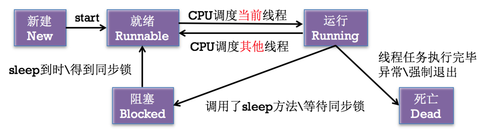

title: dart 注解实现以及代码生成原理
dart 注解实现以及代码生成原理
花生-sniper
启动
- 先创建线程，再启动线程
`
// 1. 创建线程
NSThread *thread = [[NSThread alloc] initWithTarget:self selector:@selector(run) object:nil];
// 2. 启动线程
[thread start]; // 线程一启动，就会在线程thread中执行self的run方法
// 新线程调用方法，里边为需要执行的任务
- (void)run {
NSLog(@”%@”, [NSThread currentThread]);
}
`
- 创建线程后自动启动线程
`
// 1. 创建线程后自动启动线程
[NSThread detachNewThreadSelector:@selector(run) toTarget:self withObject:nil];
// 新线程调用方法，里边为需要执行的任务
- (void)run {
NSLog(@”%@”, [NSThread currentThread]);
}
`
- 隐式创建并启动线程
`
// 1. 隐式创建并启动线程
[self performSelectorInBackground:@selector(run) withObject:nil];
// 新线程调用方法，里边为需要执行的任务
- (void)run {
NSLog(@”%@”, [NSThread currentThread]);
}
`
状态控制
- (void)start;
// 线程进入就绪状态 -> 运行状态。当线程任务执行完毕，自动进入死亡状态
`
- (void)sleepUntilDate:(NSDate *)date;
- (void)sleepForTimeInterval:(NSTimeInterval)ti;
// 线程进入阻塞状态
`
线程间通信
在开发中，我们经常会在子线程进行耗时操作，操作结束后再回到主线程去刷新 UI。这就涉及到了子线程和主线程之间的通信。我们先来了解一下官方关于 NSThread 的线程间通信的方法。
// 在主线程上执行操作
- (void)performSelectorOnMainThread:(SEL)aSelector withObject:(id)arg waitUntilDone:(BOOL)wait;
- (void)performSelectorOnMainThread:(SEL)aSelector withObject:(id)arg waitUntilDone:(BOOL)wait modes:(NSArray<NSString *> *)array;
// equivalent to the first method with kCFRunLoopCommonModes
// 在指定线程上执行操作
- (void)performSelector:(SEL)aSelector onThread:(NSThread *)thr withObject:(id)arg waitUntilDone:(BOOL)wait modes:(NSArray *)array NS_AVAILABLE(10_5, 2_0);
- (void)performSelector:(SEL)aSelector onThread:(NSThread *)thr withObject:(id)arg waitUntilDone:(BOOL)wait NS_AVAILABLE(10_5, 2_0);
// 在当前线程上执行操作，调用 NSObject 的 performSelector:相关方法
- (id)performSelector:(SEL)aSelector;
- (id)performSelector:(SEL)aSelector withObject:(id)object;
- (id)performSelector:(SEL)aSelector withObject:(id)object1 withObject:(id)object2;
线程安全和线程同步
线程安全解决方案：可以给线程加锁，在一个线程执行该操作的时候，不允许其他线程进行操作。iOS 实现线程加锁有很多种方式。
- @synchronized
- NSLock
- NSRecursiveLock
- NSCondition
- NSConditionLock
- pthread_mutex
- dispatch_semaphore
- OSSpinLock
- atomic(property) set/get
线程的状态转换
- 如果CPU现在调度当前线程对象，则当前线程对象进入运行状态，如果CPU调度其他线程对象，则当前线程对象回到就绪状态。
- 如果CPU在运行当前线程对象的时候调用了sleep方法\等待同步锁，则当前线程对象就进入了阻塞状态，等到sleep到时\得到同步锁，则回到就绪状态。
- 如果CPU在运行当前线程对象的时候线程任务执行完毕\异常强制退出，则当前线程对象进入死亡状态。
图示如下：
